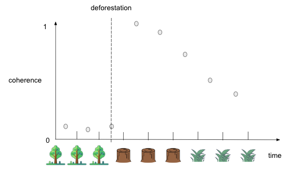

Mapping Forest Disturbance Across Amazon Basin using Phase Information from Sentinel-1 SLC
Zhen Liu
Introduction
Deforestation is a series issue for global climate and biodiversity. First, forests play a key role in the global carbon cycle. Trees absorb carbon dioxide from the atmosphere and store it. Second, forests are also home to a variety of plant and animal species and source of livelihood for many human settlements. However, due to a combination of factors like timber, agriculture, pasture, and fire, deforestation has been intense in Brazil over years. From Global Forest Watch, Mato Grosso experienced most of the deforestation during the last few years.
Now, many open-access datasets for forest disturbance use optical satellite images or satellite-based radar data. Both methods can provide a stable and constant data source. One of the significant advantages of radar for deforestation detection is constant data acquisition despite the cloud. Especially for rainforests, there are only a few cloud-free satellite images in one year and often during the dry season. RAdar for Detecting Deforestation (RADD) alerts are one of the products using Radar data to detect forest disturbance. It is built from the world’s first global, freely available radar data from the European Space Agency’s Sentinel-1 satellites. They use VV and VH intensity from GRD (Ground Region Detected) products to train a model and use the model to predict deforestation. However, the backscatters are easily affected by the characteristics of the surface, like moisture, texture, and roughness. The coherence between the two images is a more stable way to detect deforestation. Coherence is described as the phase relationships between two pulses. We can detect landcover change based on the difference between the reactions to the radar signal.
Using coherence information for deforestation detection
The coherence values between two images of forests acquired in close succession are low because of the complex structure of trees, while the values between two images of landcover after deforestation, like bare ground, are high. Figure 1 shows how the coherence varies as landcover changes. The horizontal axis refers to the time point and the landcover at that time and the vertical is the coherence between two temporally adjacent images. The coherence between the two images is low when the forest remains. When deforestation happens, the landcover change leads to low coherence. However, we can detect a high value of coherence of the next pair of images because the coherence of two bare-ground images is much higher. When a high value of coherence is detected, scientists can indicate that deforestation happened during the last time period. From the figure, we can also find that the coherence gets back to the low values after the deforestation happened. This can be explained as forest restoration or grass growth in the deforestation region.
Data acquiring and preprocessing
The workflow of data acquiring and preprocessing is shown in Figure 2. Data was downloaded from NASA Earth Data Search. There were 16 images in our study time period, which meant there were 15 coherence maps to analyze. Then, ESA's Sentinel Applications Platform (SNAP) was utilized for data preprocessing and subsetting. Users could build pipelines using the Graph Builder function. Pipelines can be imported as XML files into the module. The pipeline included several functions – reading images, applying orbits, back-geocoding, debursting, subsetting, and terrain correcting. To make work more efficient, we customized XML files for each pair of images. It saved a lot of time in operating the user interface. The final outputs were coherence maps.
Converting coherence maps to binary deforestation maps
The values in the coherence map can be understood as the similarity between two images. High values mean a high similarity between two images, while low values indicate low similarity. We needed to convert the map with the continuous value of coherence to a binary deforestation map where the presence was deforestation and the absence was no deforestation. At first, we applied a fixed threshold for each coherence image. However, the results were not what we expected. The performance of the threshold varied in different images because of the diverse distribution of values.
We then found an automatic image thresholding method – Otsu’s method. This method determined a threshold to minimize the intra-class intensity variance and maximize the inter-class variance between foreground and background in Figure 4. And, the results were shown in Figure 5. Most patches of deforestation were kept after conversion.
.gif)
Filtering out small-sized patches caused by noise
After applying the threshold, there were still some tiny patches caused by speckly in the SAR images. To decrease the effect of the noise speckle and focus more on the patches with larger sizes, we applied a the Sieve filter function to filter out the small patches. The Sieve function could be accessed both in Python and QGIS. The function removed raster polygons smaller than the provided threshold size in pixels. We applied the method in Python and took 8 pixels as the threshold based on the previous experience. Figure 5 showed one of the results.
Data fusion for deforestation mask
Before we analyze the deforestation that happened during the season in 2022, we needws to find out which areas had have already experienced deforestation before 2022. We have three data sources for a creating deforestation mask – PRODES (Program to Calculate Deforestation in the Amazon) yearly deforestation map, RADD alerts product, and Sentinel-1 SLC. The table below shows the properties of three products.
We need to preprocess those three products before we combine them as a mask. PRODES data are the official national statistics on deforestation, used by the Brazilian government to establish public policy and track progress toward deforestation reduction goals. Before using the data as a mask, we need to convert the data from vector to raster, resample and reproject the data, and then clip the image to the study region. RADD Forest Disturbance Alert before 2022 can also be a useful data source to generate a mask. To use that data, we need first to decipher the value in the RADD image because the product has its own coding method. Then, we filter out the data in 2022 and keep the data before the season. Also, we did the reproject, resample, and clip functions to the data. For the Sentinel-1 SLC data, we did the same steps as we did for 2022 but the data was in 2021. Then, we combined the three deforestation maps to get the deforestation mask in 2021 as a mask for analysis.
Results
To make the result easy to interpret, I created an RGB color composite. The red channel was the deforestation map using the new method after mask from 05/07/2022 to 11/02/2022 after the Sieve function with threshold 100; the green channel was the deforestation mask before 2022; the blue channel was the RADD alert product from May to Nov in 2022. We should pay attention to red patches and cyan patches in the composite. The red patches are the missed patches in the RADD product. These patches are found in our method but not in the RADD alerts product. The cyan patches are the patches already detected in 2021 by our method but recorded in the RADD alerts in 2022.
Last modified January 5, 2023